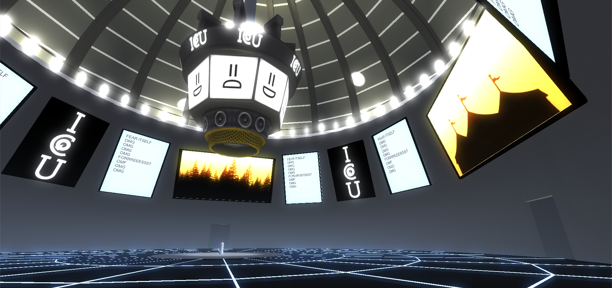
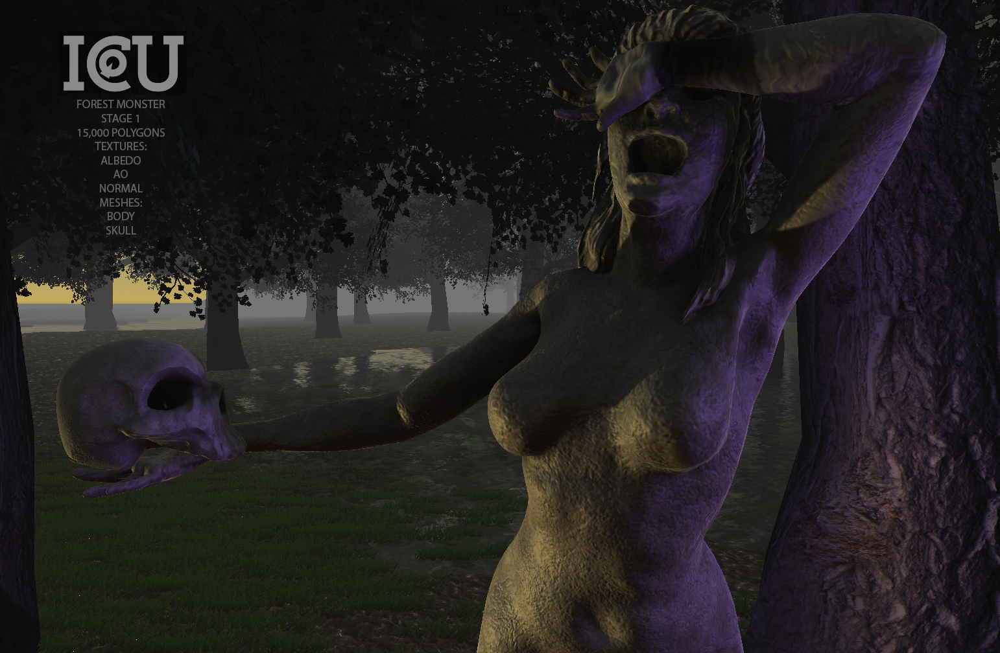
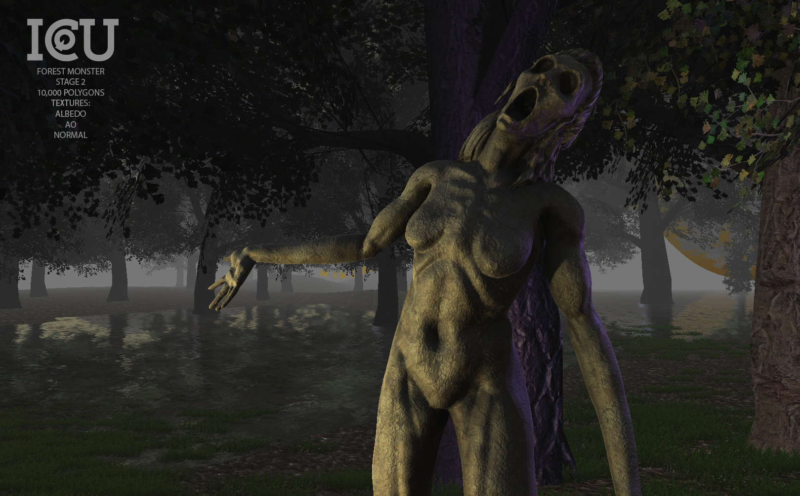

Can you keep your eyes open?
Look on as witless contestant after contestant forays into any one of our countless Monster Rooms, trying their luck to survive and make it out alive. As we challenge their vision and make them discern the real from the fake, it is the job of the audience to watch and vote to enhance their experience.
Come and be a part of the greatest spectator sport to have ever existed!
The First Season:
Alone in the Woods
As you walk into the woods, hearing the soft churning of the fog and a waterfall in the distance, you slowly realize something is not as it should be. Are those shattered statues under the bridge discarded projects -- or something else much more malevolent entirely?
Did the statue that you thought you saw out of the corner of your eye just disappear?
Are those glowing eyes in the distance? The feeling that you're being trailed grows stronger and stronger as you get deeper in the forest. If your heart is racing and you feel a sense of indomitable fear...
...you're doing it right.
Good luck! I hope you'll be ready.

download the poster!